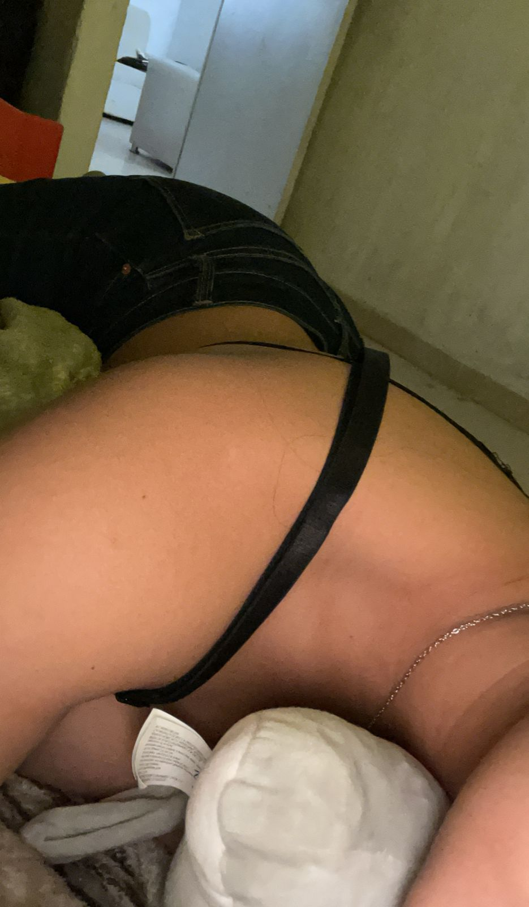

Planeamos un viaje juntos, hablamos de ahorrar para hacerlo realidad. Hubo apoyo, ternura y hasta conversaciones profundas sobre ovulación que se transformaron en carcajadas y complicidad. La confianza fue la protagonista de esta semana mi amor. Se notaba que ambos se estabamos eligiendo cada día. Los mensajes se volvieron más largos y los silencios más pesados (porque ya extrañarse dolía). Empezamos a hablar del futuro, de viajes juntos, de ahorrar para escaparnos y descubrir el mundo de la mano. Fuimos a la vaca lola hajajajaja Yo deje ver mi lado protector, y tu, tu dulzura infinita. Fuimos al parian, a lo de tu primo y un pinche cotorro me robaba jajsjs
Momentos que derriten:
“Tú eres mi precioso diamante.”
“Mi meta no es solo viajar contigo, es despertarme a tu lado en cada destino.”
“Hay algo en ti… que me da paz.”
“Quiero verte con una mochila y un boleto… a mi lado.”
“Ya no quiero que los días pasen sin ti.”
🌹 Pequeños grandes sueños:
Mencionaste Grecia como destino, bromeamos sobre ser una princesa y un caballero… sin saber que ya estabamos viviendo un cuento de hadas. Nos llamamos princesa y caballero. Tu compartiste ideas de escribir, yo imagine aventuras. Empezamos a construir castillos en el aire, sin miedo a que el viento los tumbara.
